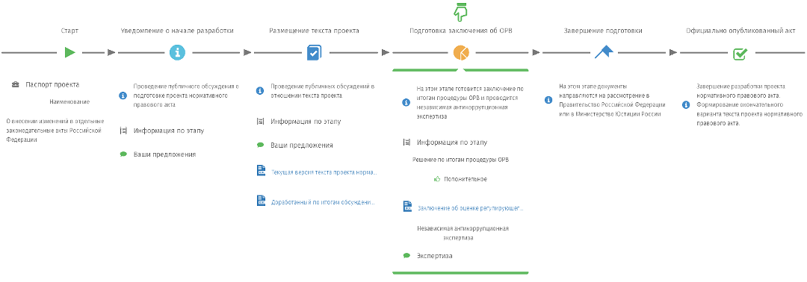

Проект назвается так, чтобы никто не догадался о чем идет речь: "О внесении изменений в отдельные законодательные акты Российской Федерации".
А вот содержание паспорта проекта:
Паспорт проекта "О внесении изменений в отдельные законодательные акты Российской Федерации"
Обоснование необходимости подготовки проекта нормативно правового акта
виртуальная валюта не имеет статуса законного средства платежа ни в одной юрисдикции. При этом виртуальная валюта не является долговым обязательством эмитента (криптовалюта на самом деле как раз и является долговой распиской, подписанной цифровой подписью), не обеспечена реальной стоимостью (а обеспечена никому неподконтрольными математическими законами), на нее не может быть обращено взыскание по исполнительным документам (так же как и на наличные деньги), приостановить совершаемые с ней операции невозможно (так же как и с наличными деньгами). Цена на нее определяется исключительно спекулятивными действиями (так же как и с любой валютой, оторванной от золотого стандарта, включая рубль и доллар), что влечет за собой высокий риск потери стоимости вложенных средств (как это произошло с рублем в 2015 году). В этой связи использование «денежных суррогатов» в качестве средства платежа и накопления может повлечь нарушение прав вовлеченных в их оборот добросовестных лиц (пожалуйста, МиФин! выплатите мне удвоенную сумму моих накоплений в рублях! я их добросовестно заработал!), поскольку держатели «денежных суррогатов» ввиду их анонимности и виртуальности лишены возможности защиты своих интересов в судебном и (или) административном порядке (и не нуждаются в ней)
Краткое описание проблемы
статьей 27 Федерального закона от 10 июля 2002 г. № 86-ФЗ «О Центральном банке Российской Федерации (Банке России)» установлено, что официальной денежной единицей (валютой) Российской Федерации является рубль. При этом определен прямой запрет на введение на территории Российской Федерации других денежных единиц и выпуск на территории Российской Федерации денежных суррогатов. Вместе с тем нормативное определение понятия «денежный суррогат» в законодательстве Российской Федерации отсутствует. Кроме того, не предусмотрена ответственность за неисполнение указанного законодательного запрета
Круг лиц
Краткое изложение целей регулирования
предлагается внесение изменений в законодательство Российской Федерации в части установления запрета в соответствии со статьей 27 Федерального закона от 10 июля 202 г. № 86-ФЗ «О Центральном банке Российской Федерации (Банке России)» на выпуск денежных суррогатов, в том числе в электронном виде, а также на уточнение действующей редакции указанной статьи, распространив установленный в ней запрет не только на выпуск денежных суррогатов, но и на осуществление операций с денежными суррогатами, включая их использование в качестве средства платежа, а также в целях обмена на рубли или иностранную валюту; введение административной и (или) уголовной ответственности за выпуск денежных суррогатов и осуществление операций с их использованием; ограничение доступа к информационным ресурсам, обеспечивающим выпуск денежных суррогатов и осуществление операций с их использованием, а также на установление соответствующей административной ответственности
Срок переходного периода (в календарных днях)
0
Общая характеристика соответствующих общественных отношений
неподконтрольность национальным органам власти привлекает к «виртуальным валютам» теневой сектор экономики. Благодаря анонимности владельцев так называемые «денежные суррогаты» получили популярность при покупке нелегальных товаров, легализации (отмывания) доходов, полученных преступным путем
Электронный адрес для отправки своих предложений
0564@minfin.ru
Почтовый адрес для отправки своих предложений
109097, г. Москва, ул. Ильинка, 9
Контактный телефон ответственного лица
8 (495)983-38-88
На каком этапе проект на дату 20.11.2015
